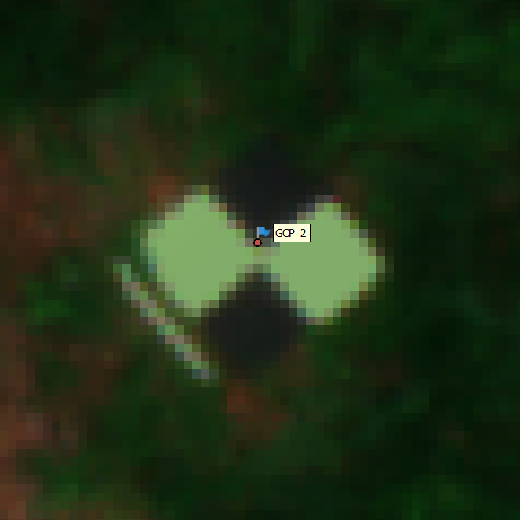

Chapter 2 Preflight Planning
2.1 Achieving positional accuracy on multi-temporal and multi-sensor data collections


2.2 Site Selection Considerations
Ideal sites:
Figure 2.3: Aerial view of a 5 year old Douglas fir trial.
Effects of topography: Warning to take extra care
Below Figure 2.4

Figure 2.4: Effect of brushing on crown visibility. Left: GCP alignment on flat ground (Error ~4cm). Right: GCP alignment on ground with elevation change (Error ~28cm)
Below Figure 2.5 shows an example of the effect of brushing on crown visibility at a moist, high-productivity common-garden trial.


Figure 2.5: Effect of brushing on crown visibility. Left: early August prior to brushing. Right: late August post brushing
2.3 Drone and Sensors: What will I need to purchase and how much will it cost?
2.3.1 Hardware Costs
Table 2.1
| Hardware | Purpose | Cost | Detail |
|---|---|---|---|
| *Zenmuse P1, RGB | Sensor | $9,000 | Positional accuracy - Horizontal: 3 cm, Vertical: 5 cm. Ground Sampling Distance (GSD) - 1cm at 80 m elevation |
| Micasense RedEdge-MX Dual | Sensor | $16,000 | Ten band multispectral camera, no longer in production |
| *Micasense RedEdge-P Dual (Panchromatic) | Sensor | $22,500 | Ten band multispectral camera with Panchromatic sharpening |
| Zenmuse H20T, Thermal and RGB | Sensor | $13,350 | Thermal and RGB sensor |
| Zenmuse L1, LiDAR and RGB | Sensor | $11,600 | LiDAR sensor released in 2020 |
| *Zenmuse L2 LiDAR and RGB | Sensor | $16,660 | LiDAR sensor released in 2023, now with 5 returns and better accuracy |
| DJI Matrice (M)300 RTK | Drone | $12,000 | 2020 released DJI enterprise drone with RC, intelligent battery case and one set of batteries |
| *DJI Matrice (M)350 RTK | Drone | $13,500 | 2023 released DJI enterprise drone with RC plus, intelligent battery case and one set of batteries |
| *DJI TB65 batteries | Drone batteries | $1,910 | Pair of the newer model M300/350 batteries. Good for one approximately 30-minute mapping flight including safety margins. At least 4 pairs are recommended for continuous flight when paired with a small generator |
| DJI DRTK2 | GNSS receiver | $4,200 | GNSS receiver for use as base to stream RTK to drone |
| *Emlid RS3 | GNSS receiver | $3,600 | GNSS receiver for use as base to stream RTK to drone and rover |
| *Emlid RS3 | GNSS receiver | $3,600 | GNSS receiver for use as rover for centimeter precise GCP or stem mapping |
Table 2.2 are some untested options:
| Hardware | Purpose | Cost | Detail |
|---|---|---|---|
| DJI Mavic 3 Multispectral0 | Sensor, Drone | $5,945 | RTK capable drone, RGB and 4 multispectral wavelengths |
| Senterra 6X | Sensor | $17,120 | RTK capable, 5 multispectral plus RGB, potential to customize wavelengths, but extra price unknown |
| Micasense Altum PT | Sensor | $25,950 | Thermal, and multispectral panchromatic, RTK capable sensor |